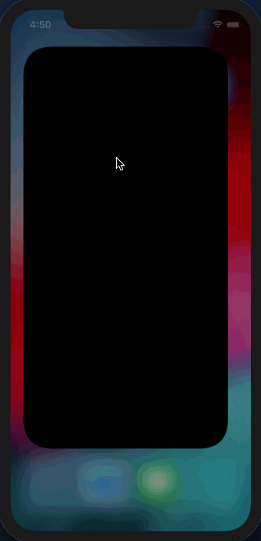
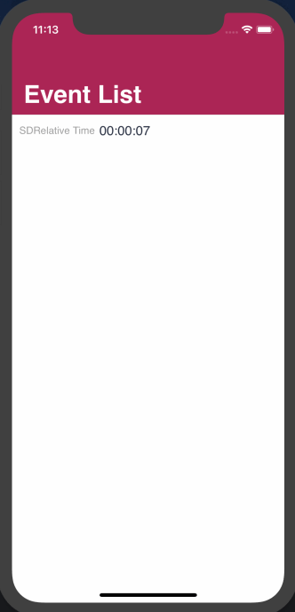

This article describes how to configure a control on the screen to count down to an event that will take place in the future or to express the time elapsed after the start of an event. For example, suppose it is 3 p.m. and an event is programmed for 4 p.m. You need to add a countdown that shows the number of minutes left for the event to begin. Also, if the event is currently taking place, you may want to show, for example, the time elapsed since the beginning of the event. You can achieve this by defining an attribute or variable based on the DateTime data type and setting its Control Type property = Relative Timer. You must assign a DateTime value to the attribute/variable, with which the control is initialized when the count is started. Properties
ThemesIt applies to the properties of the Attribute theme class. EventsTimerStatusChanged This event is triggered when any of the following conditions are met:
SampleCreate a Panel object with a variable based on the DateTime data type. Set the variable Control Type property = Relative Timer. Program the Panel Start event as shown below:
Event Start
&RelativeTimer = Now()
&RelativeTimer = &RelativeTimer.AddMinutes(15)
EndEvent
When executing the application, you will see the following:  Suppose that once the countdown reaches zero, a text must appear indicating that the event is currently taking place. To achieve this, you have to use the TimerStatusChanged event associated with the control. Add the third line of code to the Start event, as shown below:
Event Start
&RelativeTimer = Now()
&RelativeTimer = &RelativeTimer.AddMinutes(15)
&TimerStarted = False
EndEvent
Program the TimerStatusChanged event associated with the control as shown below:
Event &RelativeTimer.TimerStatusChanged
Composite
If &TimerStarted = False
//The control start to be executed
&TimerStarted = True
Else
&RelativeTimer.PrefixText = 'Live Now'
EndIf
EndComposite
EndEvent
TimerStatusChanged event explanationThis event is executed and &TimerStarted = False. So, you enter the if statement, the counter starts counting, and the value of &TimerStarted is changed to True. When the counter reaches zero, the event will be triggered again, this time entering the else statement. So, the text 'Live Now' is assigned to the control's Prefix Text property. When executing the application, you will see the following:  |